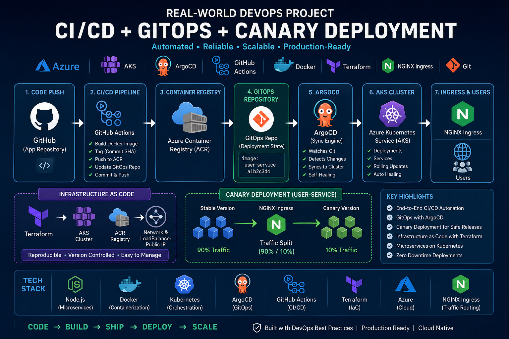

DevOps Engineer & Cloud Architect
Results-oriented engineer with 4+ years of experience in cloud infrastructure automation, CI/CD pipelines, and Kubernetes-based microservices. Currently serving as DevOps SPOC for enterprise teams at TCS.

Automating at Scale with
Cloud Native Tech.
I specialize in bridging the gap between development and operations. My expertise lies in migrating large-scale microservices to Kubernetes, implementing zero-downtime deployment strategies, and provisioning secure Azure environments using Infrastructure as Code (Terraform).
From designing Blue-Green deployments to architecting high-throughput Kafka data pipelines, I focus on building resilient, scalable systems that drive business value. My background includes a blend of software engineering and infrastructure management, allowing for a deep understanding of the full application lifecycle.
With proficiencies in Azure DevOps, Docker, and Harness CI/CD, I help teams achieve high availability and optimized container orchestration for production-grade environments.
Professional Experience
Jan 2024 - Present
DevOps Engineer, Tata Consultancy Services (TCS)
Acting as DevOps SPOC for an enterprise project of 400+ members. Migrated 40+ microservices to Kubernetes clusters and implemented Blue-Green deployment strategies for zero-risk rollbacks. Provisioned secure Azure infrastructure using Terraform and maintained CI/CD pipelines via Azure DevOps and Harness.
Jan 2022 - Jan 2024
Python Developer, Crypto Tax International
Automated large-scale data pipelines reducing processing time by 54%. Performed cost basis analysis for crypto transactions, delivering $50,000 in annual savings through algorithm optimization.
Jan 2023 - Oct 2023
Advanced Software Engineer Intern, Walmart
Designed optimized heap data structures improving processing efficiency by 20%. Refactored core modules to enhance execution speed by 15% and improved logistics operational metrics by 25%.
Oct 2021 - Dec 2021
Data Analyst Intern, TATA
Built interactive BI dashboards using Tableau and Angular for real-time insights. Improved predictive modeling accuracy by 20% through rigorous data cleaning and feature engineering.
Selected Technical Projects

GitOps & Progressive Delivery Ecosystem
Engineered a full-scale automated deployment pipeline on Azure (AKS/ACR) integrating GitHub Actions and ArgoCD. Implemented a GitOps model separating source code from deployment state, enabling Canary Rollouts via NGINX Ingress traffic splitting for zero-risk production releases.

OMR Evaluation System
Computer vision system to automate grading with high precision, showcasing algorithmic problem solving.

YouTube Data Pipeline
Automated sentiment analysis engine built on top of data extraction pipelines for real-time consumer perception.
Certifications
Advanced Statistics & Data Mining
Tata Consultancy Services
IBM Scala 101
Cognitive Class
Data Transformation with GCP
Google Cloud
Software Dev Essentials
Microsoft & LinkedIn
Ready to scale your infrastructure
?
I'm currently focused on DevOps and Cloud Architecture roles. If you have a challenge involving K8s, Azure, or Automation, let's connect.
abdul983920@gmail.com